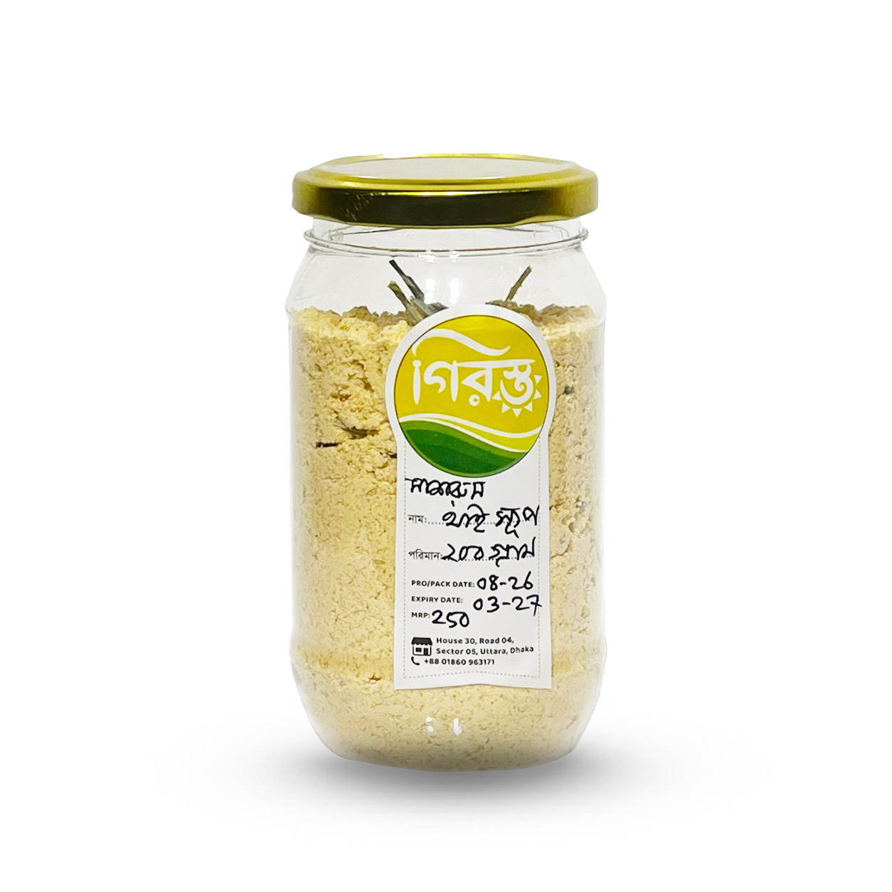

Girosto Special
মাশরুম থাই স্যুপ | Girosto
SKU: GIR-119
ঝাল, টক ও সুগন্ধি থাই স্বাদের সঙ্গে মাশরুমের পুষ্টিগুণ—দুটো একসঙ্গে পেতে চাইলে মাশরুম থাই স্যুপ হতে পারে দারুণ একটি পছন্দ। Bangladesh Mushroom Institute কর্তৃক সার্টিফাইড মাশরুম ব্যবহার করে তৈরি এই স্যুপে মাশরুম ফ্লেক্সের পাশাপাশি রয়েছে লেমন গ্রাস, লেমন লিফ, প্যাপরিকা পাউডার ও অন্যান্য বাছাইকৃত উপাদান।
Girosto-এর থাই মাশরুম স্যুপ দ্রুত তৈরি করা যায় এবং নাশতা, বিকেলের হালকা খাবার কিংবা মূল খাবারের আগে উষ্ণ স্যুপ হিসেবে পরিবেশন করা যায়। প্রস্তুতকারকের তথ্য অনুযায়ী এতে কৃত্রিম রঙ ও অপ্রয়োজনীয় অতিরিক্ত ফ্লেভার ব্যবহার করা হয়নি।
৳260
Product availability, appearance, and delivery time may vary. Contact Girosto if you need sourcing or ingredient details.
মাশরুম থাই স্যুপ এর বিশেষ বৈশিষ্ট্য
মাশরুমের স্বাদের সঙ্গে থাই কুইজিনের পরিচিত লেমন গ্রাস, লেমন লিফ ও প্যাপরিকার সমন্বয় এই স্যুপকে সাধারণ মাশরুম স্যুপ থেকে আলাদা করে। ব্যস্ত সময়ে সহজে প্রস্তুত করা যায় বলে এটি ঘরের খাবারের তালিকায় একটি সুবিধাজনক সংযোজন হতে পারে।
- Bangladesh Mushroom Institute কর্তৃক সার্টিফাইড মাশরুম দিয়ে তৈরি
- থাই ফ্লেভারের স্বাদ ও সুবাস
- মাশরুম ফ্লেক্স সমৃদ্ধ
- লেমন গ্রাস ও লেমন লিফ ব্যবহার করা হয়েছে
- প্যাপরিকা পাউডারের বিশেষ স্বাদ
- কৃত্রিম রঙ ছাড়া প্রস্তুত
- দ্রুত ও সহজে তৈরি করা যায়
মাশরুম থাই স্যুপ এর উপাদান
স্বাদ, ঘনত্ব ও সুগন্ধের ভারসাম্য তৈরি করতে এই স্যুপে বিভিন্ন পরিচিত উপাদান ব্যবহার করা হয়েছে। লেমন গ্রাস ও লেমন লিফ স্যুপে সতেজ সাইট্রাস ঘ্রাণ যোগ করে, আর প্যাপরিকা ও গোলমরিচ থাই স্বাদের গভীরতা বাড়াতে সাহায্য করে।
- মাশরুম ফ্লেক্স
- বাটার
- হুইট ফ্লাওয়ার
- কর্ন স্টার্চ
- পেঁয়াজ
- আদা
- রসুন
- গোলমরিচ
- সিজনিং
- লবণ
- চিকেন ফ্লেভার
- প্যাপরিকা পাউডার
- লেমন গ্রাস
- লেমন লিফ
কেন মাশরুম থাই স্যুপ বেছে নেবেন?
প্রতিদিনের সাধারণ স্যুপের স্বাদে একটু ভিন্নতা আনতে চাইলে থাই ফ্লেভারের মাশরুম স্যুপ হতে পারে আকর্ষণীয় একটি বিকল্প। বিশেষ করে মাশরুমের সঙ্গে হালকা ঝাল ও লেমন ঘ্রাণ পছন্দ করেন এমন মানুষের জন্য এটি উপভোগ্য।
১. সার্টিফাইড মাশরুম দিয়ে তৈরি
এই স্যুপ তৈরিতে ব্যবহৃত মাশরুম প্রস্তুতকারকের তথ্য অনুযায়ী Bangladesh Mushroom Institute কর্তৃক সার্টিফাইড।
২. থাই ফ্লেভারের আলাদা স্বাদ
লেমন গ্রাস, লেমন লিফ, প্যাপরিকা, গোলমরিচ ও অন্যান্য উপাদানের সমন্বয় স্যুপে থাই খাবারের পরিচিত স্বাদ ও সুবাস তৈরি করে।
৩. মাশরুম ফ্লেক্স সমৃদ্ধ
শুধু মাশরুম ফ্লেভার নয়, এতে প্রকৃত মাশরুম ফ্লেক্স রয়েছে, যা স্যুপের স্বাদ ও টেক্সচারকে আরও উপভোগ্য করে।
৪. কৃত্রিম রঙ ব্যবহার করা হয়নি
প্রস্তুতকারকের তথ্য অনুযায়ী এই স্যুপে কৃত্রিম রঙ বা অপ্রয়োজনীয় অতিরিক্ত ফ্লেভার ব্যবহার করা হয়নি।
৫. দ্রুত প্রস্তুত করা যায়
অফিস থেকে ফিরে, বিকেলের নাশতায় কিংবা শীত-বৃষ্টির দিনে সহজেই গরম স্যুপ তৈরি করে পরিবেশন করা যায়।
মাশরুম স্যুপের পুষ্টিগুণ
মাশরুম স্বাভাবিকভাবেই বিভিন্ন ভিটামিন, মিনারেল এবং অন্যান্য পুষ্টি উপাদানের উৎস হতে পারে। ফলে একটি ভারসাম্যপূর্ণ খাদ্যতালিকার অংশ হিসেবে মাশরুমভিত্তিক খাবার রাখা যেতে পারে।
তবে কোনো খাবারকে ডায়াবেটিস, ক্যান্সার বা হৃদ্রোগের চিকিৎসা হিসেবে বিবেচনা করা উচিত নয়। এসব শারীরিক অবস্থায় খাবার নির্বাচনের সময় চিকিৎসক বা পুষ্টিবিদের পরামর্শ এবং পণ্যের সম্পূর্ণ পুষ্টিমান ও উপাদান তালিকা বিবেচনা করা প্রয়োজন।
থাই মাশরুম স্যুপের স্বাদ কেমন?
থাই খাবারের অন্যতম বৈশিষ্ট্য হলো টক, ঝাল, সুগন্ধি এবং সেভরি স্বাদের সমন্বয়। এই স্যুপে লেমন গ্রাস ও লেমন লিফের সতেজ ঘ্রাণ, প্যাপরিকার হালকা ঝাঁজ এবং মাশরুমের সমৃদ্ধ স্বাদ একসঙ্গে পাওয়া যায়।
ফলে এটি সাধারণ ক্রিমি স্যুপের তুলনায় কিছুটা ভিন্ন এবং সুগন্ধি স্বাদের অভিজ্ঞতা দেয়।
মাশরুম থাই স্যুপ কীভাবে তৈরি করবেন?
সেরা ফলাফলের জন্য প্যাকেটের গায়ে দেওয়া প্রস্তুতপ্রণালি অনুসরণ করুন। সাধারণভাবে প্রয়োজন অনুযায়ী স্যুপ মিক্স পানির সঙ্গে ভালোভাবে মিশিয়ে নির্দিষ্ট সময় জ্বাল দিয়ে ঘন করে নিতে হয়।
পরিবেশনের সময় চাইলে স্বাদ অনুযায়ী যোগ করতে পারেন—
- সামান্য গোলমরিচ
- তাজা লেমন জুস
- কাঁচামরিচ
- ধনেপাতা
- সেদ্ধ সবজি
- অতিরিক্ত মাশরুম
মাশরুম থাই স্যুপ সংরক্ষণের নিয়ম
স্যুপের স্বাদ ও গুণগত মান ভালো রাখতে সঠিক সংরক্ষণ জরুরি।
- ঠান্ডা ও শুষ্ক স্থানে রাখুন।
- সরাসরি সূর্যের আলো থেকে দূরে রাখুন।
- আর্দ্রতা থেকে পণ্যকে রক্ষা করুন।
- প্যাকেট খোলার পর মুখ ভালোভাবে বন্ধ করুন।
- সবসময় শুকনো চামচ ব্যবহার করুন।
- প্যাকেটে উল্লেখিত মেয়াদের মধ্যে ব্যবহার করুন।
কারা মাশরুম থাই স্যুপ খেতে পারেন?
সাধারণ খাদ্যাভ্যাসের অংশ হিসেবে প্রাপ্তবয়স্করা এই স্যুপ উপভোগ করতে পারেন। তবে এতে হুইট ফ্লাওয়ার, বাটার ও চিকেন ফ্লেভার রয়েছে, তাই যাদের নির্দিষ্ট খাদ্য অ্যালার্জি বা খাদ্য নিয়ন্ত্রণ রয়েছে তাদের উপাদান তালিকা যাচাই করা উচিত।
ডায়াবেটিস, হৃদ্রোগ, কিডনি রোগ বা অন্য কোনো বিশেষ শারীরিক অবস্থায় সোডিয়াম, কার্বোহাইড্রেট ও অন্যান্য পুষ্টি উপাদানের প্রয়োজন ব্যক্তিভেদে ভিন্ন হতে পারে। এমন ক্ষেত্রে চিকিৎসক বা পুষ্টিবিদের পরামর্শ অনুযায়ী খাবার নির্বাচন করুন।
কেন Girosto থেকে মাশরুম থাই স্যুপ কিনবেন?
Girosto দৈনন্দিন রান্না ও খাবারের জন্য স্বাদ, উপাদান এবং ব্যবহারিক সুবিধাকে গুরুত্ব দিয়ে বিভিন্ন পণ্য নির্বাচন করে। যারা ঘরে সহজে ভিন্ন স্বাদের স্যুপ উপভোগ করতে চান, তাদের জন্য মাশরুম থাই স্যুপ হতে পারে আকর্ষণীয় একটি অপশন।
- বাছাইকৃত মাশরুমভিত্তিক পণ্য
- থাই ফ্লেভারের ভিন্ন স্বাদ
- উপাদান সম্পর্কে পরিষ্কার তথ্য
- সহজে প্রস্তুতযোগ্য
- দৈনন্দিন ব্যবহারের উপযোগী
- অনলাইনে সহজে অর্ডারের সুবিধা
মাশরুম থাই স্যুপ স্পেসিফিকেশন
| বিষয় | বিস্তারিত |
|---|---|
| পণ্যের নাম | মাশরুম থাই স্যুপ |
| পণ্যের ধরন | প্রস্তুতযোগ্য মাশরুম স্যুপ |
| ফ্লেভার | থাই |
| প্রধান উপাদান | মাশরুম ফ্লেক্স |
| বিশেষ উপাদান | লেমন গ্রাস, লেমন লিফ ও প্যাপরিকা পাউডার |
| অন্যান্য উপাদান | বাটার, হুইট ফ্লাওয়ার, কর্ন স্টার্চ, পেঁয়াজ, আদা, রসুন, গোলমরিচ, সিজনিং, লবণ ও চিকেন ফ্লেভার |
| মাশরুমের উৎস | Bangladesh Mushroom Institute কর্তৃক সার্টিফাইড |
| কৃত্রিম রঙ | প্রস্তুতকারকের তথ্য অনুযায়ী ব্যবহার করা হয়নি |
| ব্যবহার | নাশতা, হালকা খাবার ও অ্যাপেটাইজার |
| সংরক্ষণ | ঠান্ডা ও শুষ্ক স্থানে |